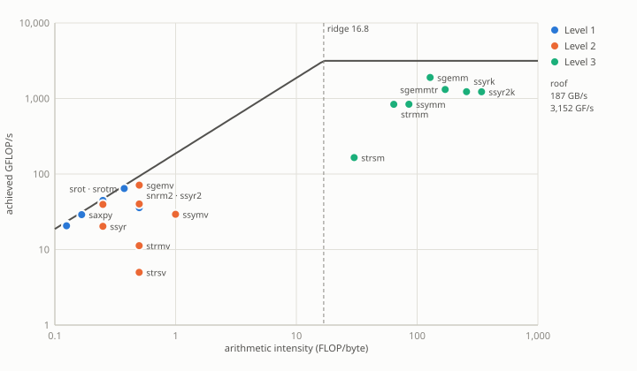

Benchmark results for all routines on Nvidia Geforce Gtx 1650.
Run make bench to generate wgblas results, or make cuda for cuBLAS results.
Roofline
Every routine placed at its arithmetic intensity (FLOPs per byte of compulsory traffic) against what it achieved, under two ceilings: a sloped memory roof of 187.2 GB/s and a flat compute roof of 3,152 GFLOP/s (measured (fma.js + bandwidth.js)).
They meet at the ridge point, 16.84 FLOP/byte. A routine to the left of it cannot be compute-bound at any size — no kernel tuning beats the bandwidth line there, so the only lever is bandwidth efficiency. Level 1 and Level 2 are left of the ridge by construction; Level 3 is the only level with enough data reuse to cross it.

The axes span four decades each to fit Level 1 and Level 3 on one plot, which leaves the memory-bound routines close together. The chart zooms: ctrl/⌘ + scroll or the + / − buttons, drag to pan, double-click to zoom in or reset.
routine
level
size
intensity
GFLOP/s
GB/s
% of roof
bound
dasum *
1
16,777,216
0.125
21.2
169.7
91%
memory
idamax *
1
16,777,216
0.000
0.0
174.5
93%
memory
isamax *
1
16,777,216
0.000
0.0
163.0
87%
memory
sasum *
1
16,777,216
0.250
41.1
164.4
88%
memory
saxpy *
1
16,777,216
0.167
28.9
173.7
93%
memory
scopy *
1
16,777,216
0.000
0.0
159.1
85%
memory
sdot *
1
16,777,216
0.250
44.6
178.6
95%
memory
snrm2 *
1
16,777,216
0.500
35.8
71.7
38%
memory
srot *
1
16,777,216
0.375
63.8
170.2
91%
memory
srotm *
1
16,777,216
0.375
64.3
171.6
92%
memory
sscal *
1
16,777,216
0.125
20.7
165.3
88%
memory
sswap *
1
16,777,216
0.000
0.0
171.8
92%
memory
sgemv *
2
4,096
0.500
71.3
142.7
76%
memory
sger *
2
4,096
0.250
39.6
158.4
85%
memory
ssymv *
2
4,096
0.998
29.3
29.4
16%
memory
ssyr *
2
4,096
0.250
20.3
81.2
43%
memory
ssyr2 *
2
4,096
0.500
40.1
80.3
43%
memory
strmv *
2
4,096
0.499
11.3
22.5
12%
memory
strsv *
2
4,096
0.499
5.0
10.0
5%
memory
sgemm
3
1,024
128.125
1898.0
14.8
60%
compute
sgemmtr
3
1,024
170.750
1317.5
7.7
42%
compute
ssymm
3
1,024
85.417
838.7
9.8
27%
compute
ssyr2k
3
1,024
341.417
1228.7
3.6
39%
compute
ssyrk
3
1,024
256.125
1229.8
4.8
39%
compute
strmm
3
1,024
64.031
836.8
13.1
27%
compute
strsm *
3
4,096
30.111
165.0
5.5
5%
compute
Each row is that routine's largest configuration in its main benchmark, where a kernel is closest to its asymptotic behaviour. Intensity is FLOPs over compulsory traffic, so it assumes perfect caching: exact for the streaming Level 1 and 2 kernels, an upper bound for tiled Level 3 ones, whose real DRAM traffic is higher.
* FLOP count supplied by scripts/roofline.py — these benchmarks record bytes only, so the standard BLAS count is used.
Benchmark results for all routines on Nvidia Geforce Gtx 1650.
Run
make benchto generate wgblas results, ormake cudafor cuBLAS results.Roofline
Every routine placed at its arithmetic intensity (FLOPs per byte of compulsory traffic) against what it achieved, under two ceilings: a sloped memory roof of 187.2 GB/s and a flat compute roof of 3,152 GFLOP/s (measured (fma.js + bandwidth.js)).
They meet at the ridge point, 16.84 FLOP/byte. A routine to the left of it cannot be compute-bound at any size — no kernel tuning beats the bandwidth line there, so the only lever is bandwidth efficiency. Level 1 and Level 2 are left of the ridge by construction; Level 3 is the only level with enough data reuse to cross it.
